Farm & Ranch
Cattle ranches, hay operations, century farms, and everything with a barn on it. Kimmy grew up around…
Explore Farm & Ranch →
Farms, ranches, horse setups, riverfront, and land across the Hundred Valleys of the Umpqua. Kimmy Karlovich rides, ranches, hunts, and fishes this county — and she'll help you buy or sell your piece of it right.
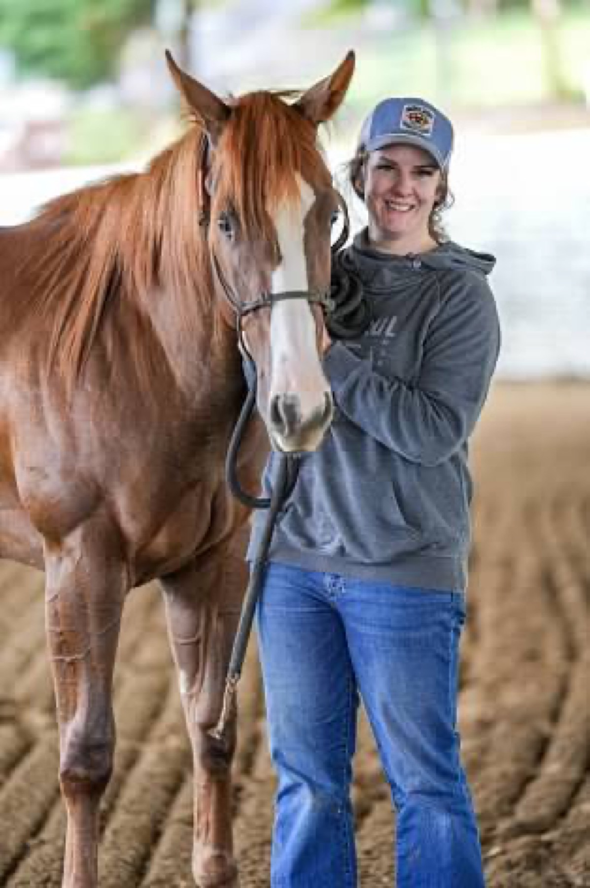
Born and raised in Coos Bay, rooted in Douglas County since her early twenties — Kimmy's daily life is the life her clients are shopping for. Horses in the pasture, dogs in the truck, weekends of barrel racing, trail rides, hunting seasons, and river days.
That means when she walks a property, she reads it like an owner: well logs and water rights, arena footing and winter drainage, fence lines and hay storage. The details that make or break rural ownership are the details she checks before you ever write an offer.
Eight kinds of rural real estate, one specialist who knows every one of them from lived experience — not a brochure.
Cattle ranches, hay operations, century farms, and everything with a barn on it. Kimmy grew up around…
Explore Farm & Ranch →
Kimmy is a lifelong horsewoman and active barrel racer — when she walks a horse property she sees footing,…
Explore Horse Property →
Bare land is the most misunderstood purchase in real estate. Zoning, wells, septic approval, access,…
Explore Land & Acreage →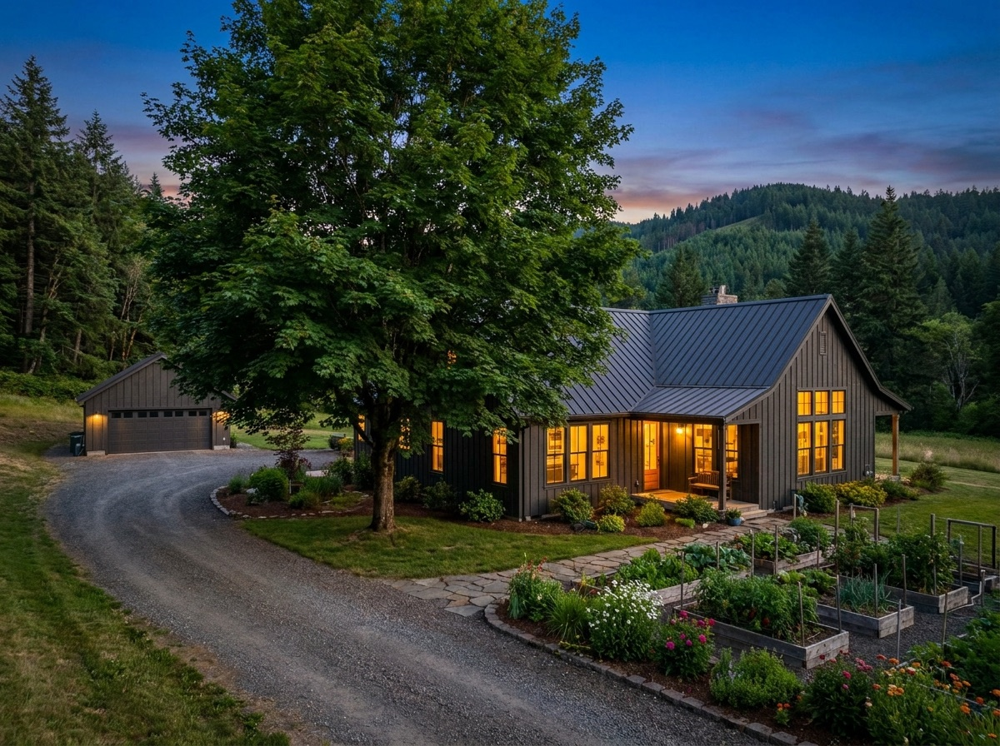
The farmhouse on five acres. The homestead with the orchard and the shop. The single-level on two usable acres…
Explore Rural Homes →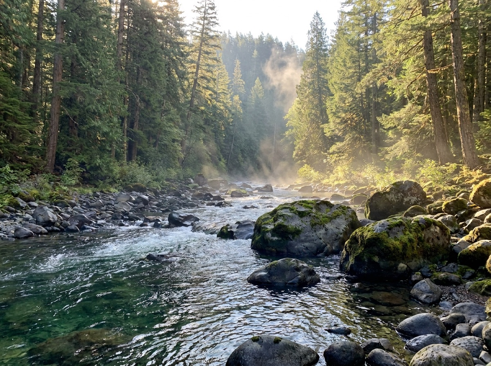
The North Umpqua, South Umpqua, main-stem Umpqua, and a hundred named creeks — Douglas County is defined by…
Explore Riverfront →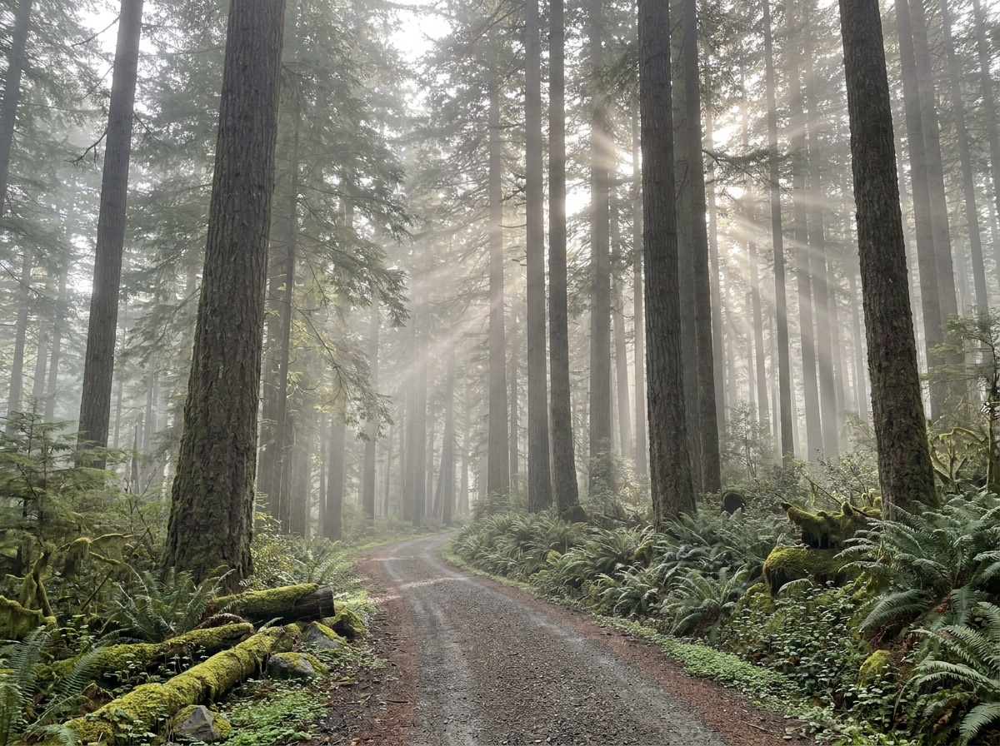
Douglas County is the historic timber capital of Oregon, and timbered ground remains one of its smartest…
Explore Timber Land →
Roosevelt elk, blacktail deer, turkey, bear, and waterfowl — Douglas County offers some of western Oregon's…
Explore Hunting Land →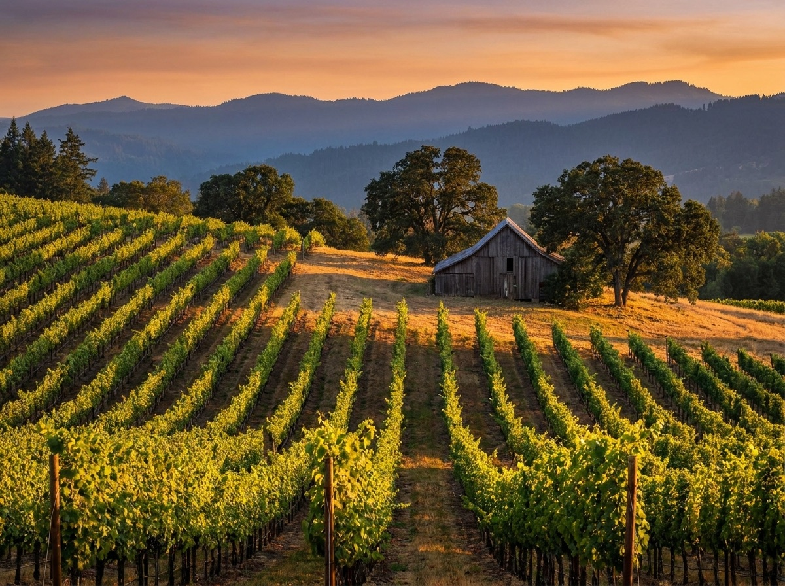
The Umpqua Valley AVA is one of Oregon's oldest and most underrated wine regions — home to pioneering…
Explore Vineyard →Barrel racing, beach rides, cattle dogs, and a kid growing up horseback — this is Kimmy's actual camera roll, and the life waiting for you in Douglas County.

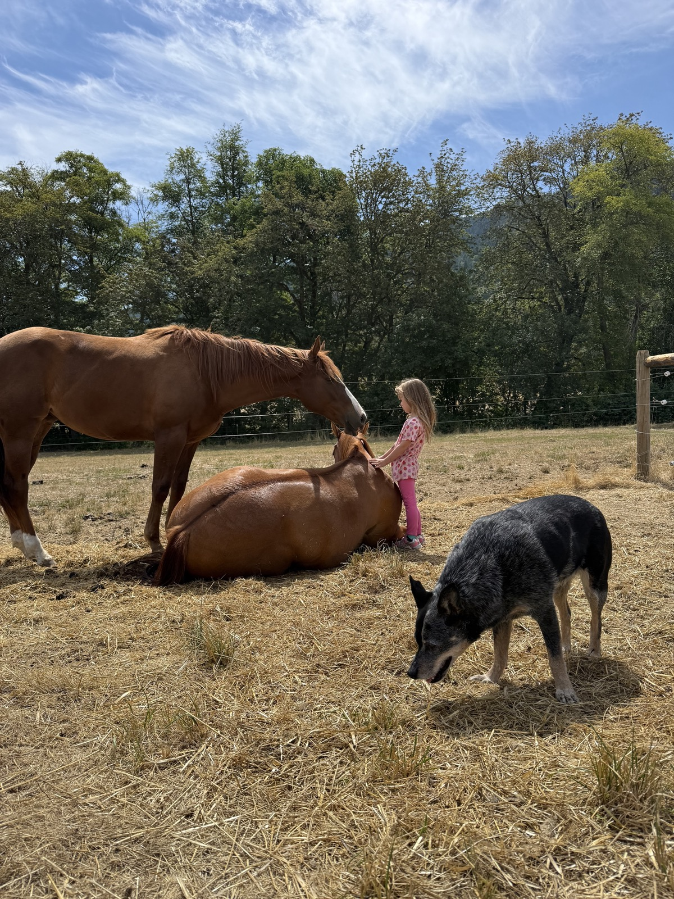
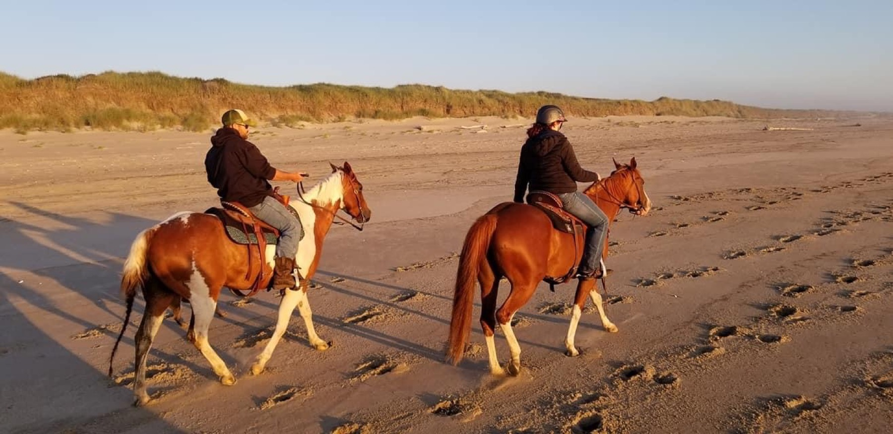
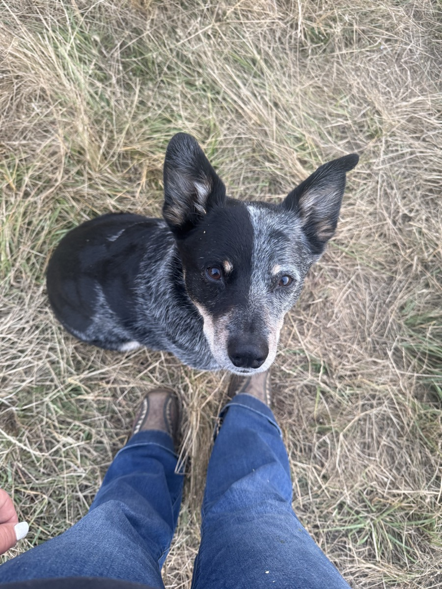
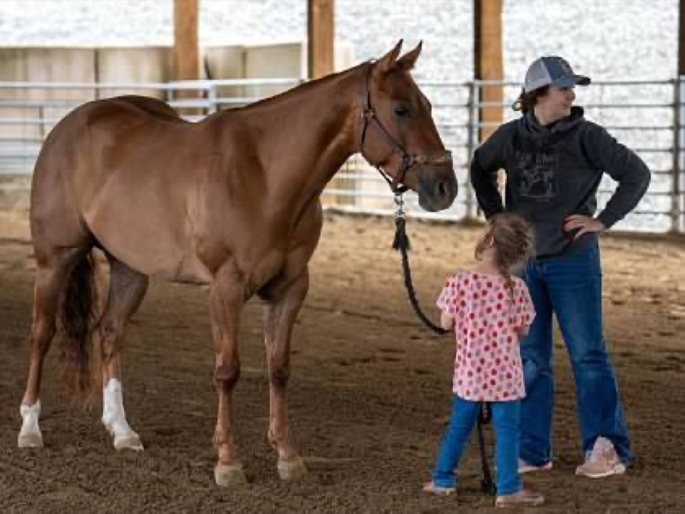
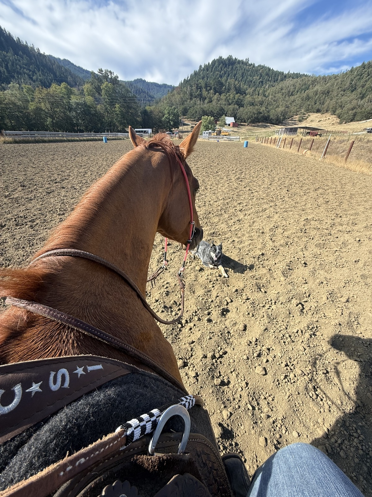
"I'm always willing to go the extra mile — and out here, that mile is usually gravel."— Kimmy Karlovich
From Melrose vineyards to Tiller timber, every valley in this county has its own personality, its own water, and its own market. Pick yours — Kimmy knows the road there.
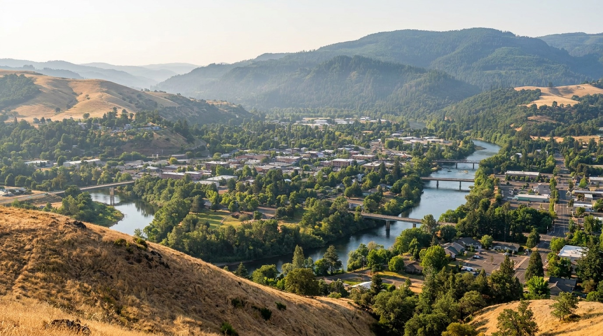
Wells, septic, water rights, zoning, timber — the deep local knowledge most agents charge you in mistakes.
Everything a rural buyer needs to know — zoning, wells, septic, access, financing, and the Douglas County quirks that catch out-of-area buyers off guard.
Read the guide →Well logs, flow tests, water quality, springs, cisterns, and shared wells — how to evaluate rural water before you buy.
Read the guide →Standard, sand filter, and ATT systems; inspections, site evaluations, repairs, and what septic really costs in rural Oregon.
Read the guide →
Priority dates, beneficial use, forfeiture, exempt uses, and how to verify a water right before you close on irrigated land.
Read the guide →
Barns, arenas, footing, drainage, turnout, hay storage, and trailer logistics — a barrel racer's checklist for evaluating equestrian property.
Read the guide →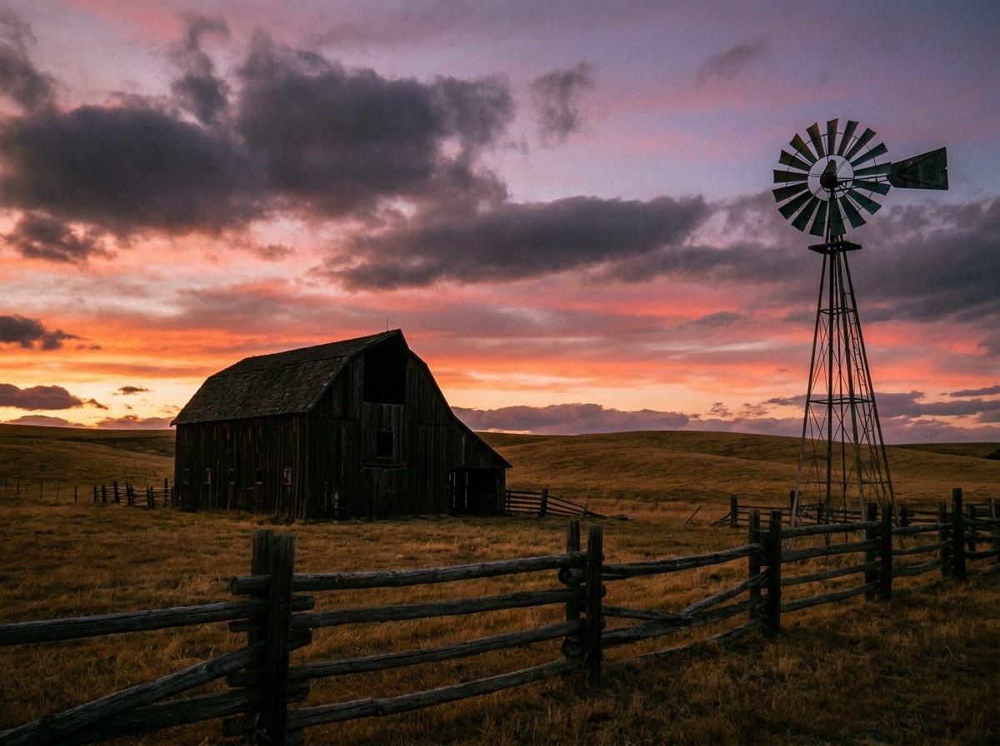
Valuation, water documentation, timber and deferral considerations, marketing to the right buyers, and timing a farm sale.
Read the guide →
What rural buyers and sellers need to know about the Umpqua Valley market right now — inventory, pricing, and where the opportunities are.
Read →
Water, access, zoning, septic, and boundaries — the five checks that separate dream properties from expensive lessons.
Read →
What a competitor looks for in footing, dimensions, and drainage — from someone who runs cans on her own ground.
Read →Whether you're buying your first five acres or selling the ranch that raised you — call, text, or email. Kimmy answers.
541-643-9509